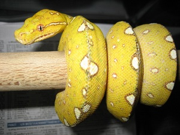
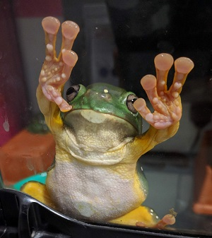
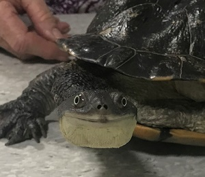

Services
We pride ourselves on providing the best personalised service to our clients regarding their beloved pets. Some of the services we can provide you include:
- Reptile and amphibian medicine and surgery (snakes, lizards, turtles, frogs)
- Small mammal medicine and surgery (cats, dogs, rabbits, guinea pigs, ferrets, rats, mice)
- Chicken medicine and surgery
- Wildlife medicine and surgery
- Exotics, fish and invertebrate advice
- Vaccinations
- Microchipping
- Desexing
- Dentistry
- Husbandry advice
- Behavioural advice
- Nutritional advice
- Pathology
- Radiography
- Ultrasonography
- Endoscopy
- Parasite control (Fleas, ticks, mites, intestinal worms, heartworms)
- Referral
Our services are not limited to this list so please feel welcome to enquire at your convenience. Our friendly staff is there to help you and your pets out.


